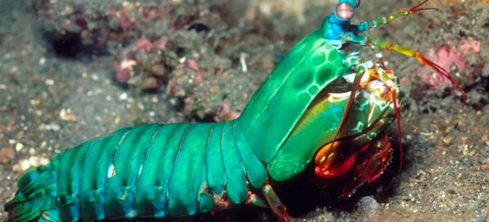
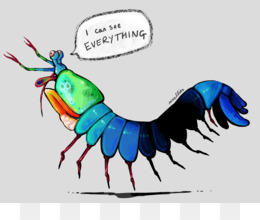
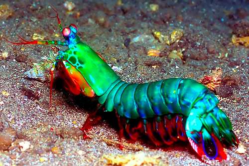

Soco a 80km/h: Conheça o Stomatopoda
Fatos sobre o Stomatopoda
Nome e Classificação científica

Cientistas o chamam de Odontodactylus scyllarus mas os brasileiros gostam de chama-lo de Lacraia do Mar ou Camarão Mantis!
Agora vamos descobrir como os pesquisadores os classificam:
Reino: Animalia ||
Filo: Arthropoda ||
Subfilo: Crustacea ||
Classe: Malacostraca ||
Subclasse: Hoplocarida ||
Ordem: Stomatopoda
Um dos animais mais fortes do planeta!

Além dos 3 nomes que vimos o Stomatopoda também é chamado de Lagosta-Boxeadora e não é para menos! Ele possui dois apêndices que se assemelham a um martelo, chamados de Porretes de Dáctilo, que são usadas para espancar e esmagar sua presas com uma força de 80km/h!
Só super força? Ele tem super visão também!
Uma das espécies da Lacraia do mar (Gonodactylus smithii) possui o sistema de visão de cores mais complexo do mundo animal, enquanto nós, pobres humanos, só conseguimos processar três tipos de cores primárias (vermelho, verde e azul), nosso amigo é capaz de enxergar 12 cores primárias! Isso porquê eles possuem 12 cones de percepção de cor, podendo até enxergar luz ultravioleta!
Tão rápido quanto o Flash!

Além do seu soco ser incrivelmente forte ele tambem consegue movimentar seus apêndices tal qual um tiro de arma de fogo! Mas o mais curioso é que, tanto a força quanto a velocidade do ataque, não danificam seu corpo! Um estudo publicado por cientistas da Universidade Tecnológica de Nanyang, na Singapura, explica a descoberta das duas camadas de sua estrutura:
1: A superior, constituída de biocerâmica (carbonato de cálcio amorfo)
2: Inferior, de biopolímero (proteínas e quitina)
Foi constatado que esses crustáceos possuem uma "estrutura elástica" que faz com que armazenem e liberem energia ao "socar" suas presas, fazendo seus movimentos mais fortes e mais rápidos!
Natureza Competitiva
Nosso amigo pode ser fofo, mas é extremamente agressivo e não se dá bem com semelhantes de sua espécie pois quando se encontram tendem a disputar território. Quando uma lagosta vence uma disputa, ela adota uma postura vitoriosa, mas se perde adota uma postura derrotada.